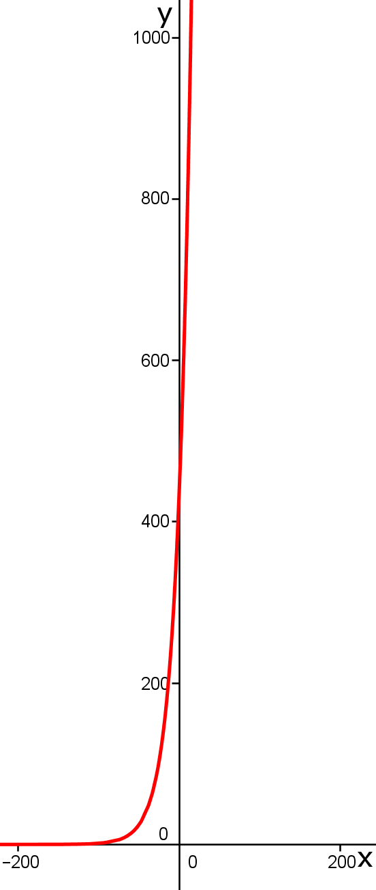
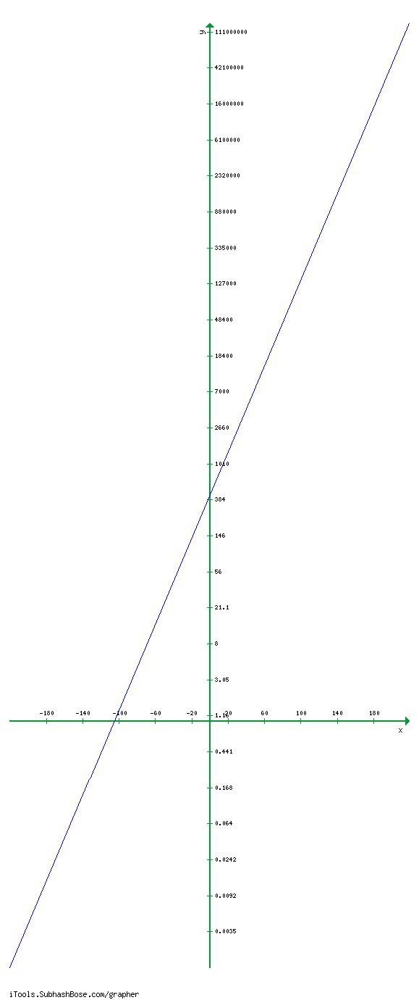

3.2 Akustische Signale
a)
Wir nehmen eine gleichstufige Stimmung an. Ein um eine Oktave erhöhter Ton hat die doppelte Frequenz. Dann ist die Frequenz eines Tones die Frequenz eines tieferen Tones multipliziert mit \( \sqrt[12]{2^x} \) wobei x der Abstand zwischen den Tönen in Halbtonschritten ist. Die Frequenz des Kammertons a ist 440 Hz. Dann ist die Frequenz \( f_{c'} \) von c':\( f_{c'} = 440 * \sqrt[12]{2^3} = 523,251 \). Also ist die Frequenz \( f_c \) von \(c = \frac{f_{c'}}{2} = \frac{523,251}{2} = 261,626\). Die Töne der zwei Oktaven sind dementsprechend:
in Hz:
\( f_{c} = 261,626 \)
\( f_{d} = 261,626 * \sqrt[12]{2^2} = 311,127 \)
\( f_{e} = 261,626 * \sqrt[12]{2^4} = 329,628 \)
\( f_{f} = 261,626 * \sqrt[12]{2^5} = 349,228 \)
\( f_{g} = 261,626 * \sqrt[12]{2^7} = 391,995 \)
\( f_{a} = 440 \)
\( f_{h} = 440 * \sqrt[12]{2^2} = 493,883 \)
\( f_{c'} = 440 * \sqrt[12]{2^3} = 523,251 \)
\( f_{d'} = 440 * \sqrt[12]{2^5} = 587,33 \)
\( f_{e'} = 440 * \sqrt[12]{2^7} = 659,255 \)
\( f_{f'} = 440 * \sqrt[12]{2^8} = 698,456 \)
\( f_{g'} = 440 * \sqrt[12]{2^{10}} = 783,991\)
\( f_{a'} = 440 * 2 = 880 \)
\( f_{h'} = 880 * \sqrt[12]{2^2} = 987,767\)
\( f_{c''} = 2 * 523,251 = 1046,5 \)
Darstellung von \( f(x) = 440 \cdot \sqrt[12]{2^x}\): (links: linear, rechts: logarithmisch)
 
(linker Graph erstellt mit GeoGebra, rechter Graph erstellt mit: http://itools.subhashbose.com/grapher/index.php)